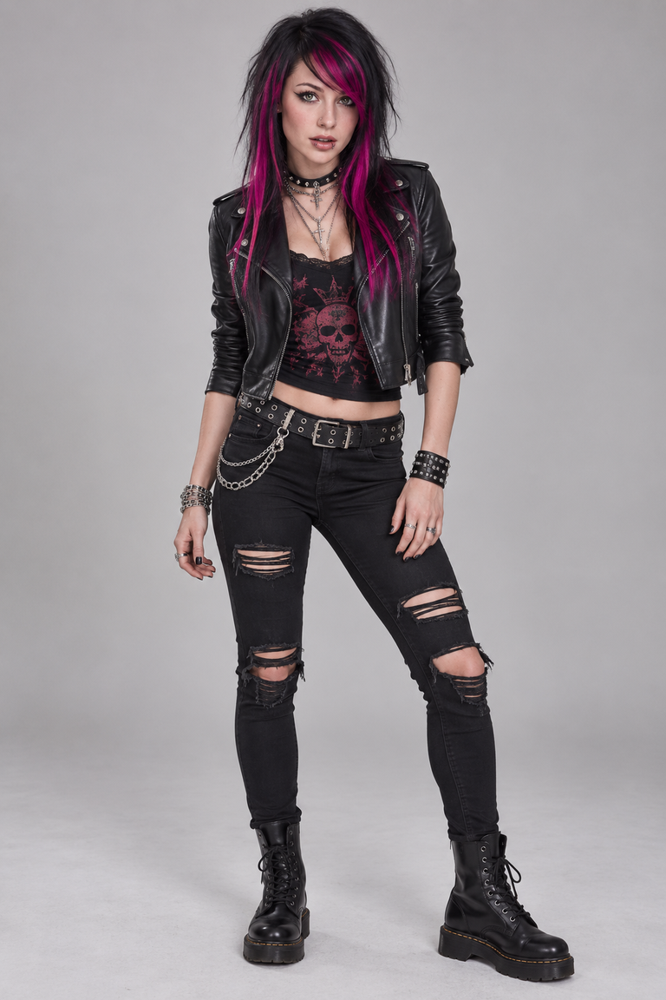
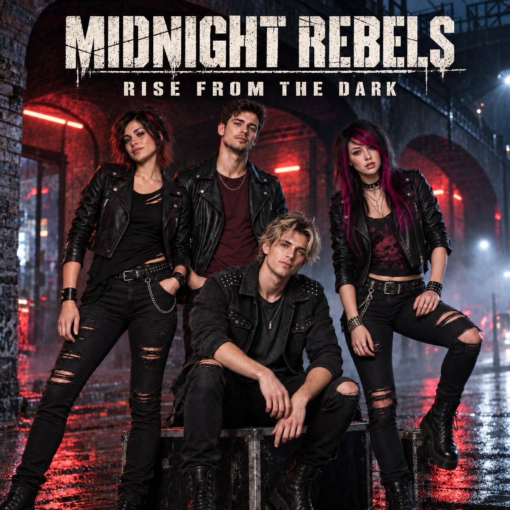
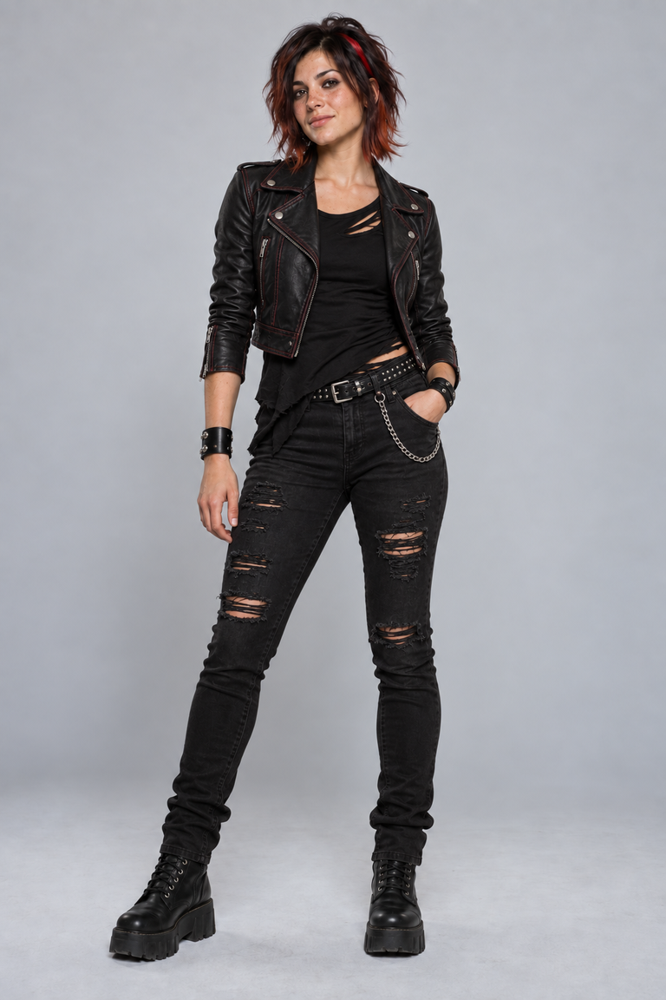
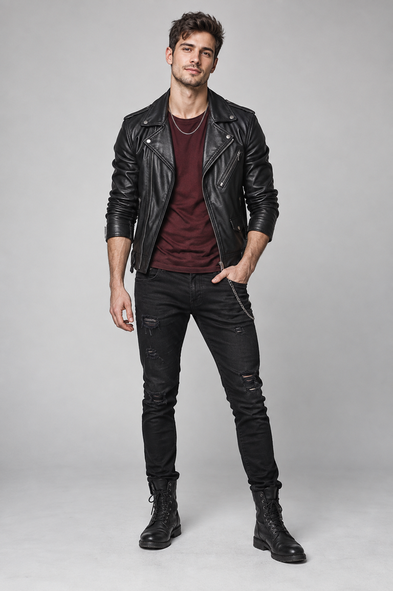
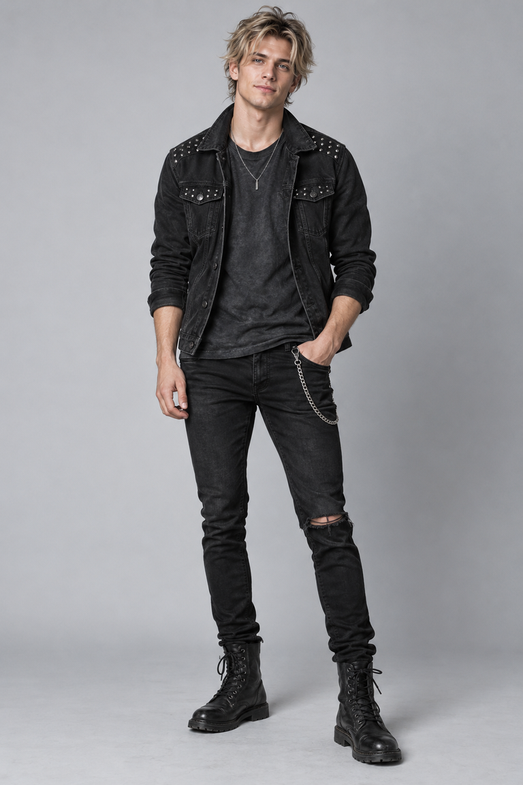
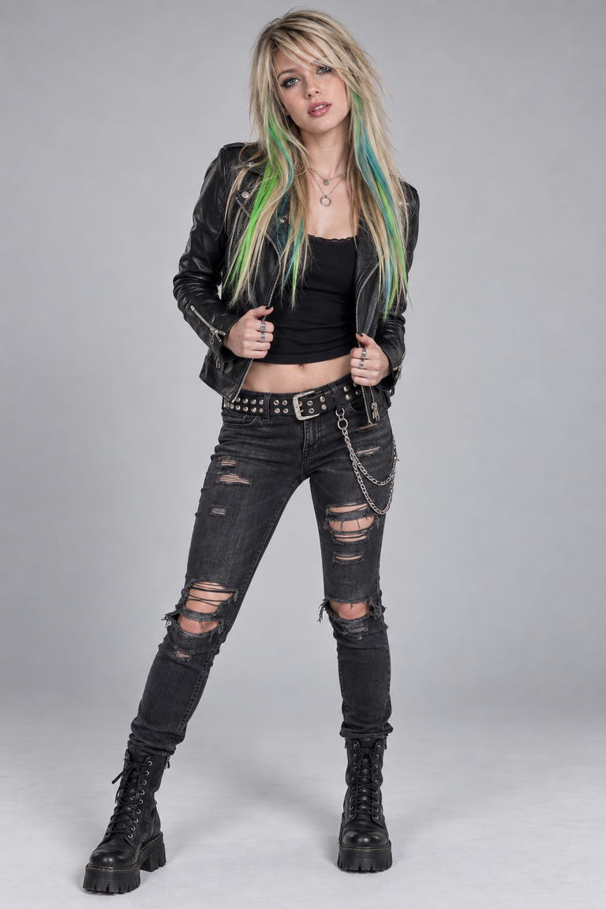

01
CAROLINE
Lead vocals · Voice of the project

VIRTUAL ALTERNATIVE ROCK · GERMANY × CZECHIA
Four personalities. One uncompromising sound. A new chapter begins after midnight.
THE STORY
Midnight Rebels is a German-Czech virtual alternative-rock project built on strong voices, raw guitars and modern electronic tension.
Caroline, Kate, Georg and Jürgen each bring a different energy. Together they create music about relationships, resistance, mistakes and the courage to begin again.
The debut album RISE FROM THE DARK brings 19 original songs together as one complete chapter. Powerful voices, distinctive guitars, electronic detail and lyrics about connection, breaking points and renewed strength define the unmistakable character of Midnight Rebels. Release is planned for 30 November 2026.
THE BAND

Lead vocals · Voice of the project

Guitar · Backing vocals

Bass · Electronic elements

Guitar · Rhythm
The emotional centre of Midnight Rebels. Her voice moves from vulnerable verses to direct, powerful choruses.
Sharp guitar lines and a strong second voice. Kate brings urgency, contrast and restless energy.
The foundation beneath the songs. Bass and electronic layers give the project its weight and modern edge.
Rhythm, drive and guitar texture. Jürgen turns quiet tension into momentum when the songs open up.
THE SOUND
Raw guitars, firm bass and live-feeling drums form the physical core of the music.
Female and male perspectives give the songs tension, dialogue and emotional depth.
The lyrics face love, disappointment, self-respect, silence and the decision to stand up again.

THE CONNECTION
Gabina brought RDK260 and Midnight Rebels together. She became the bridge between two projects, two countries and one shared musical energy.
PHOTO ARCHIVE
Original visuals from the first chapter of the project and its connection with RDK260.
NEW PHOTOS
New photos will appear here.
THE SONGS
Listen to a 30-second preview of every song.
A song about finding strength after the moment everything seemed lost.
Words that stay inside too long — intimate, restrained and emotionally direct.
Pressure, distance and the feeling of speaking to someone who is no longer listening.
STREAMS & VIDEOS
New releases and streams will appear here.
Vlož odkaz z YouTube nebo Amuse. Pro uložení na veřejný web použij přístupový token GitHubu.
FAN MESSAGES
A SHARED CHAPTER
RDK260 are Radek, Daniela, Krystyna and Veronika. Together with Gabina and Midnight Rebels, they connect Czech and German creativity in one story — each with its own identity and language, united by a shared energy.
VISIT RDK260.CZ